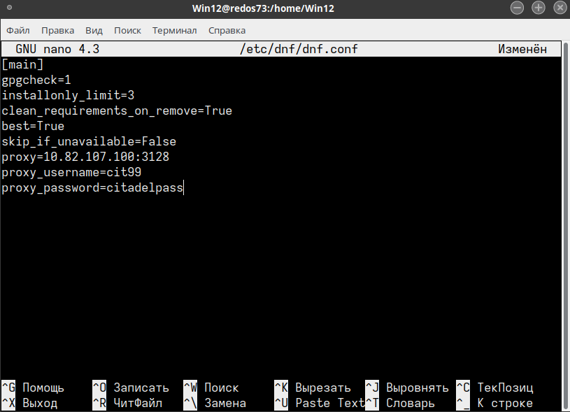

Настройка dnf.conf для прокси-сервера
Для настройки dnf.conf необходимо отредактировать от root:
nano /etc/dnf/dnf.conf
Прописываем в НИЖНЕЙ части следующие строки:
proxy=http://10.82.107.100:3128
proxy_username=
proxy_password=
Пример того как должно получиться:
